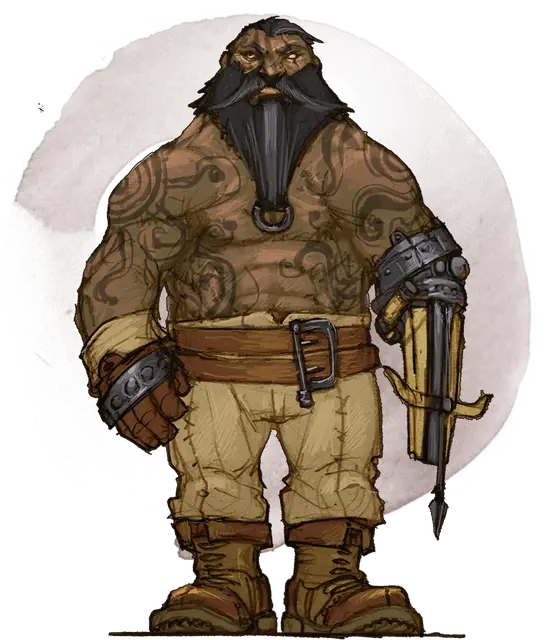

Носка Ур’грей
Noska Ur’gray
Средний Гуманоид (Щитовой дварф), нейтрально-злой, именной НИП

Класс Доспеха 11 (кожаный доспех)
Хиты 32 (5к8 + 10)
Скорость 25 футов
| мод | спас | ||
|---|---|---|---|
| СИЛ | 15 | +2 | +2 |
| ЛОВ | 11 | +0 | +0 |
| ТЕЛ | 14 | +2 | +2 |
| мод | спас | ||
|---|---|---|---|
| ИНТ | 10 | +0 | +0 |
| МДР | 10 | +0 | +0 |
| ХАР | 11 | +0 | +0 |
Навыки Запугивание +2
Сопротивление урону яд
Чувства тёмное зрение 60 футов, пассивное Восприятие 10
Языки Общий, Дварфийский
Опасность 1/2 (100 опыта)
Бонус мастерства +2
Особенности
Дварфская устойчивость. Носка совершает с преимуществом спасброски от яда.
Тактика стаи. Носка совершает с преимуществом броски атаки по существу, если в пределах 5 футов от этого существа находится как минимум один дееспособный союзник Носки.
Слабое лазание. Проверки Силы, совершаемые Ноской для лазанья имеют помеху.
Действия
Мультиатака. Носка совершает две рукопашные атаки.
Булава. . Рукопашная атака оружием: +4 к попаданию, досягаемость 5 футов, одно существо. Попадание: Дробящий урон 5 (1к6 + 2).
Тяжелый арбалет. Дальнобойная атака оружием: +2 к попаданию, дистанция 100/400 футов, одна цель. Попадание: Колющий урон 5 (1к10).
Описание
Носка — безжалостный головорез гильдии Занатара.
Зелёная слизь Подгорья лишила его левой руки, и вместо протеза к культе приделан тяжёлый арбалет.
Головорезы это безжалостные громилы, умеющие запугивать и заниматься насилием. Они работают за деньги, и практически лишены моральных принципов.